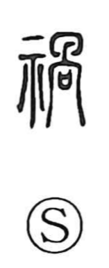

禍

Uncategorized
Kun: wazawai | On: ka
calamity ・ misfortune ・ disaster
Explanation
Shirakawa reads 禍 as a ritual image. The left side 示 is the altar-table for addressing the gods. The right side 咼 serves as the phonetic and is analyzed as a sacred receptacle for covenant tablets set together with the upper part of a human skeleton. In early belief, calamities were thought to arise from a baleful spirit attached to human remains, so petitions were placed in the receptacle and offered at the altar to drive misfortune away. From this scene of exorcistic prayer, the character came to denote calamity itself and the act of averting it.